Shonai
Shonai · Yamagata
Shonai
Highlighted on the Yamagata map.
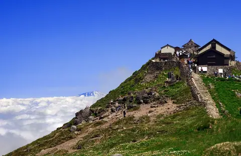
Stay
月の沢温泉北月山荘
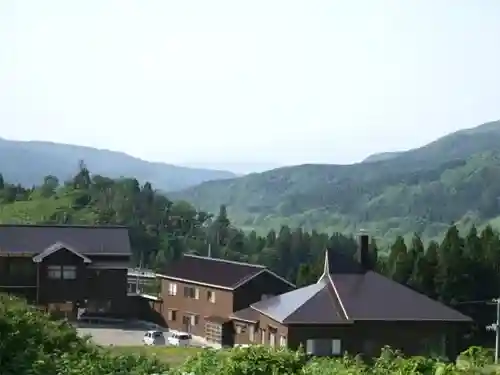
Tsukinosawa Onsen Kitagassanso
Onsen lodging in Shonai, Yamagata.
ビジネス民宿 源助
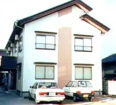
Business Minshuku Gensuke
Minshuku guesthouse in Shonai, Yamagata.
ファミリーロッジ旅籠屋・庄内店
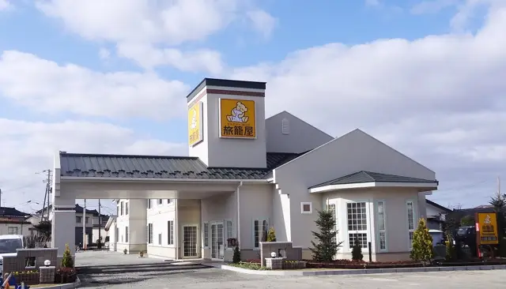
Family Lodge Hatagoya Shonai
Hotel in Shonai, Yamagata.
平成館
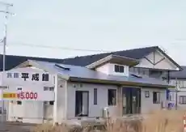
Heiseikan
Hotel in Shonai, Yamagata.
Dining
中華そば八千代
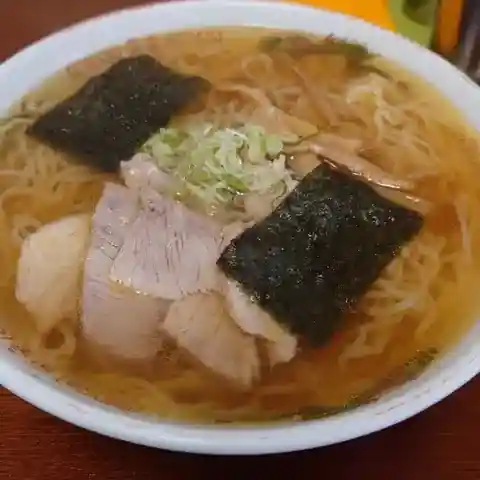
Chuuka Soba Yachiyo
Ramen shop in Shonai, Yamagata.
ケンちゃんラーメン 余目店
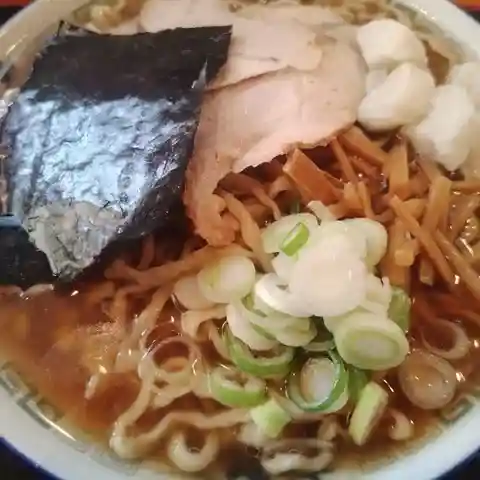
Ken Chan Raamen Amarume Mise
Ramen shop in Shonai, Yamagata.
萬人
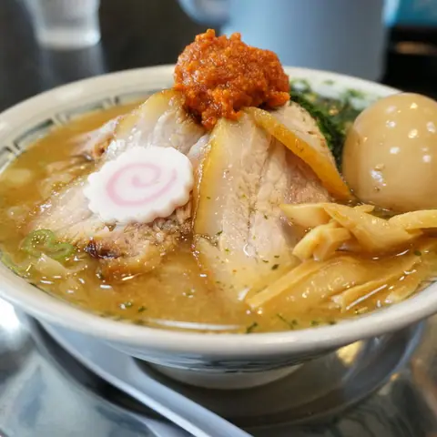
Bannin
Ramen shop in Shonai, Yamagata.
和牛料理はんだ
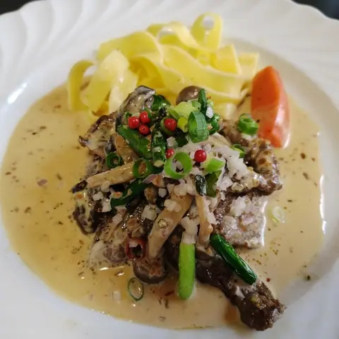
Wagyuu Ryouri Handa
Steakhouse in Shonai, Yamagata.
花のドライブイン
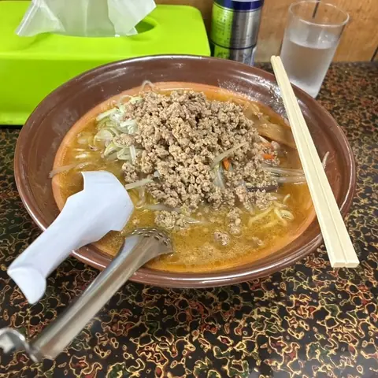
Hana No Doraibuin
Shokudo diner in Shonai, Yamagata.
一幸食堂
Kazuyuki Shokudou
Shokudo diner in Shonai, Yamagata.
いろどり
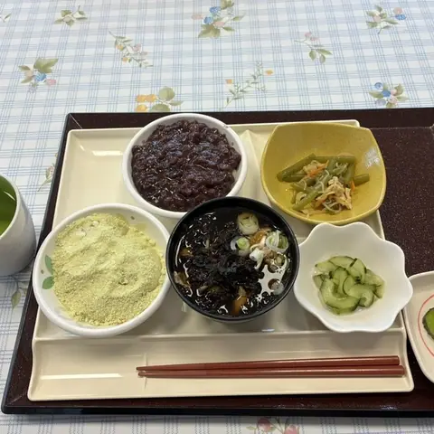
Irodori
Shokudo diner in Shonai, Yamagata.
焼きそば専門店テンテン
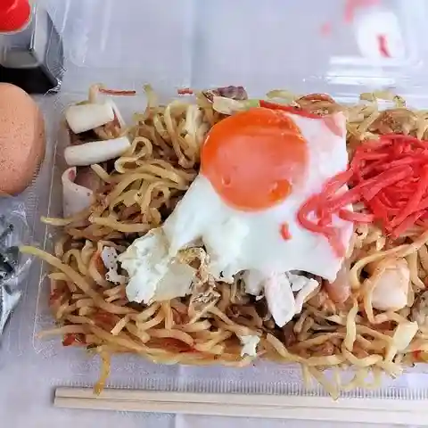
Yakisoba Senmonten Tenten
Yakisoba shop in Shonai, Yamagata.
かなめ食堂
Kaname Shokudou
Shokudo diner in Shonai, Yamagata.
田村食堂
Tamura Shokudou
Ramen shop in Shonai, Yamagata.
パストラール
Pasutoraaru
Café in Shonai, Yamagata.
ブリラーノ
Buriraano
Italian restaurant in Shonai, Yamagata.
あじ彩
Aji Sai
Chinese restaurant in Shonai, Yamagata.
どうむ
Doumu
Yoshoku (Western-style) restaurant in Shonai, Yamagata.
川村食堂
Kawamura Shokudou
Udon restaurant in Shonai, Yamagata.
香林塔
Kaori Hayashi Tou
Pasta restaurant in Shonai, Yamagata.
ひげ坊主
Hige Bouzu
Izakaya in Shonai, Yamagata.
余目製パン クラッセ店
Amarume Seipan Kurasse Mise
Bakery in Shonai, Yamagata.
ラーメンショップ椿 狩川店
Raamenshoppu Tsubaki Karikawa Mise
Ramen shop in Shonai, Yamagata.
依田善
Yoda Zen
Eel restaurant in Shonai, Yamagata.
鉄板焼 こみせん
Teppanyaki Komisen
Teppanyaki restaurant in Shonai, Yamagata.
農々家
Nou (Kurikaesi) Ie
Shokudo diner in Shonai, Yamagata.
煌麺
Kou Men
Ramen shop in Shonai, Yamagata.
Sights
Gassan Shrine
Mt. Gassan forms the Dewa Sanzan with Mt. Haguro and Mt. Yudono and is a sacred site of Shugendo mountain worship. Gassan Shrine on the summit, dedicated to the moon deity Tsukuyomi, was the only Tohoku shrine of the highest pre-war imperial rank.